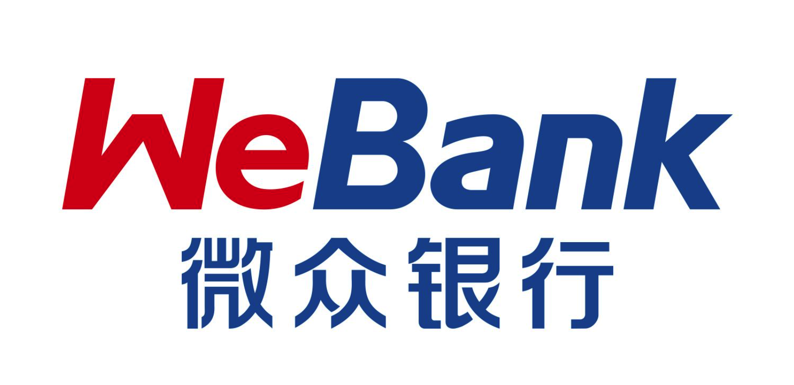
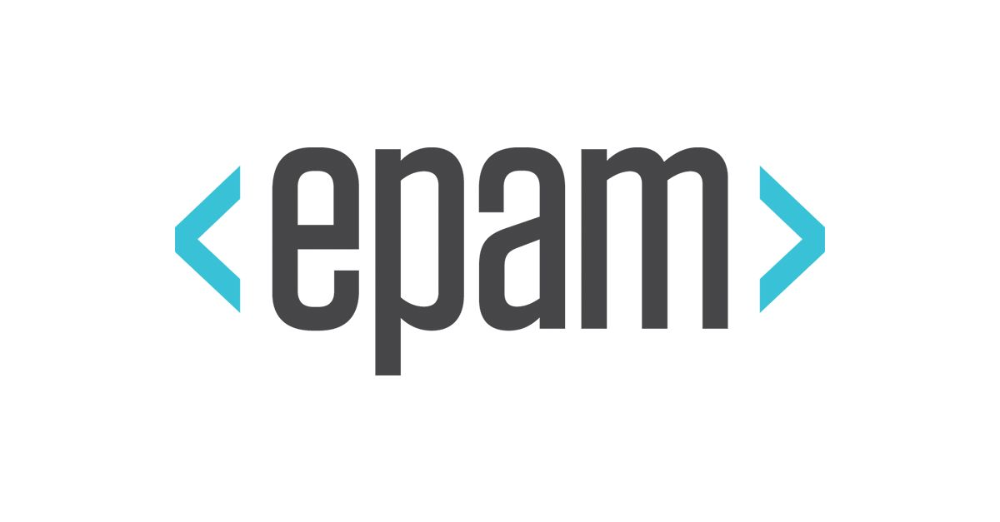
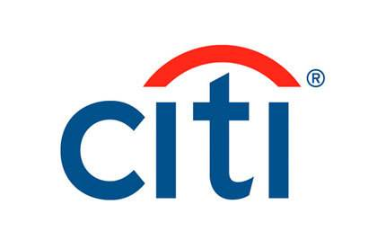

IT Manager | Project Manager | Front-end Developer
Email: irvinezhao@gmail.com
WeChat: irvine_77
More than 7 years working experience in IT industry, more than 3 years project manager experience;
Familiar with the entire IT development life cycle and customer service delivery;
Agile development practitioners who have held positions such as iteration managers, agile coaches, product design and project managers on projects;
Possess excellent work enthusiasm and innovative spirit, willing to accept challenges, good at analysis, solution and summary, good self-management and multi-tasking ability;
Fluent in spoken and written English, with good business communication skills.
Currently working as an IT project manager in WeBank, mainly responsible for To B's one-stop operation and maintenance management tool WeCube open source products and international wallet credit cooperation projects.
2011-2015 Dalian University of Foreign Languages, Computer Science and Technology, Bachelor Degree
 2018.08-present, Work as IT Project Manager @WeBank Collaborative Business Technologies R&D Center
Mainly responsible for the open source products and international cooperation projects of To B's one-stop operation and maintenance management tool WeCube. The WeCube product has been open sourced smoothly and has 1000+ stars. At present, 3 projects are using this product and put into production. He is responsible for the management and front-end architect of the entire R&D team, tracking the progress of the project, coordinating the cooperation among the project team members, formulating Project development plan documents, quantify tasks, and reasonably assign them to appropriate personnel. When the project is completed, a project summary is required, and a project summary document is generated and reported to the upward; in the international wallet credit cooperation project, he is responsible for the analysis of project labor cost control, formulates and promotes business agreements with partners, discusses and formulates technical architecture with the technical team, and completes product architecture design. , organize R&D and testing work, and be responsible for the whole process delivery and operational data analysis.
 2016.01-2018.8 EPAM System (Shenzhen) Co., Ltd.
Mainly responsible for the Front-end development, responsible for the Hong Kong Exchange's Market Site project, the Hong Kong Jockey Club project and the Hong Kong Exchange e-Form project. Using React.js and Vue.js, SASS/LESS, Bootstrap, jQuery, Webpack.
 2015.06-2015.12 Citi Bank (Dalian) Co., Ltd.
Mainly responsible for the Core Bank development, responsible for customer information management, debit card system development and management, transfer business, etc., participating in Citi bank's global Go To Common project, developing and supporting Australia, Singapore, China (including Hong Kong, Macau) and other 11 national banking systems were successfully go-live.